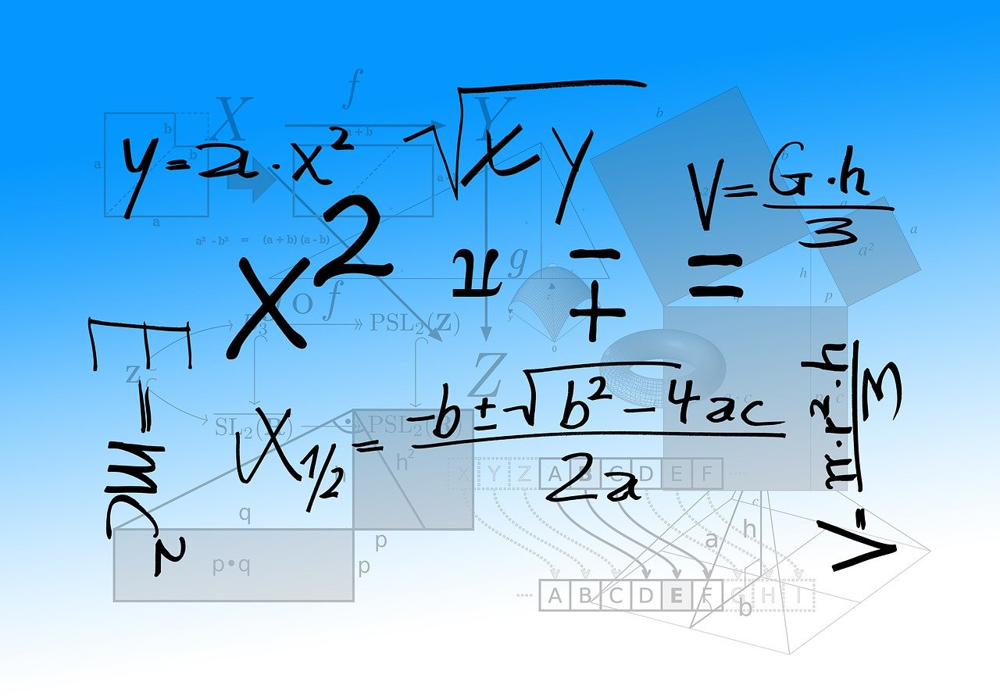

BASE ist meine persönliche Knowledge Base – ein Ort, an dem ich systematisch Grundlagenwissen rund um den Rubik’s Cube zusammentrage. Hier findest du verständlich aufbereitete Informationen zu allen wichtigen Themen, die beim Lösen und Verstehen des Würfels eine Rolle spielen. Dazu gehören unter anderem die Notation der Züge, Definitionen und Erläuterungen zu den Bewegungen, mathematische Prinzipien, die dem Cube zugrunde liegen, sowie weiterführende Gedanken zu Gruppentheorie, Permutationen und anderen spannenden Konzepten. Diese Seite soll nicht nur als Nachschlagewerk dienen, sondern auch als Ausgangspunkt für alle, die den Würfel nicht nur lösen, sondern auch verstehen wollen – von den Basics bis zu tiefergehenden Analysen.
